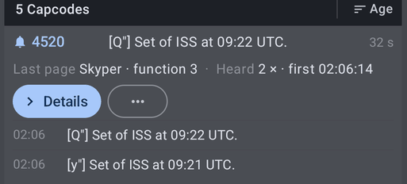
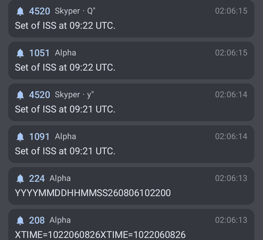
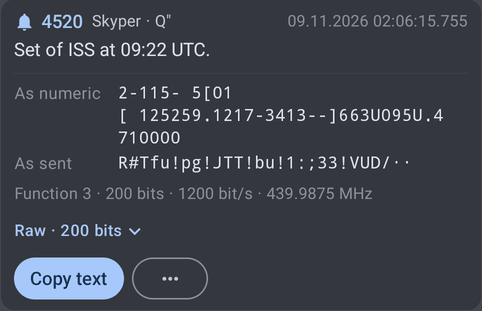

POCSAG
POCSAG is the protocol of pagers: small receivers that beep and show a short message. Mobile phones replaced them for most people, but paging is still used where a message has to reach many receivers reliably and at once: fire brigades and rescue services, hospitals, industrial sites, and commercial paging networks. Radio amateurs run their own paging network, DAPNET, which sends news, weather, satellite passes and messages between hams.
RF Analyzer decodes POCSAG at all three speeds and shows the pages per receiver address. It only receives. All you need is a receiver for the VHF/UHF frequencies in use - an RTL-SDR with a simple antenna works. POCSAG is part of the Digital Extension, which must be installed.
Not every page is meant for you
In many countries it is not allowed to listen to, store or pass on messages that are not meant for the general public, such as the pagers of emergency services. Check your local regulations. Amateur paging (DAPNET) is meant to be received by everyone.
How POCSAG Works
On the air
A paging transmitter sends a strong FM signal that jumps between two frequencies, 4.5 kHz above and below the channel (frequency shift keying), at 512, 1200 or 2400 bit/s. A transmission starts with a long preamble (so pagers can wake up), followed by batches of codewords, each protected by an error-correcting code: RF Analyzer corrects up to two wrong bits per codeword. In the waterfall, a POCSAG transmission is a block a few kHz wide that lasts from a fraction of a second to several seconds.
Capcodes
Every pager listens for its capcode (also called RIC, receiver identity code): a number up to 2 097 151. A pager can have several capcodes - one for its owner, others for the groups it belongs to - so one page can reach thousands of pagers at once. Each page also carries a function (0 to 3, often called A to D), which the pager uses to pick a ring tone or a meaning.
Message types
- Alphanumeric: text (7-bit ASCII), up to a few hundred characters.
- Numeric: digits and a few signs (space,
.,-,U,[,]), used by simple pagers and for call-back numbers. - Tone only: no message at all, just the beep.
The protocol doesn't say which type a page is - the pager knows it from its programming. RF Analyzer therefore decodes every page both ways and picks the reading that fits (see How the reading is chosen).
Where to find POCSAG
| Network | Frequency | Speed |
|---|---|---|
| DAPNET (amateur radio) | 439.9875 MHz | 1200 bit/s |
| Skyper | 465.970 MHz | 1200 bit/s |
| Cityruf / e*Message | 466.075 MHz | 1200 bit/s |
These are the frequencies in Germany (the presets for Germany tune to them). Other countries use other frequencies; look for strong FM bursts between 140 and 470 MHz.
Getting Started
The quickest way to start is the mode button in the header of the Digital tab: tap it, tap › next to POCSAG and pick a network. RF Analyzer tunes to its frequency, sets the speed to 1200 bit/s and starts the analyzer. Set up your source first in the Source tab.
You can also set it up by hand: select POCSAG as the demodulation mode in the Demodulation tab and put the channel frequency on the paging channel. Paging networks send in bursts, often only every minute or two, so give it some time.
Controls in the Demodulation Tab
- Channel Frequency: the paging channel.
- Baud Rate: Auto decodes 512, 1200 and 2400 bit/s at the same time, so you don't need to know the speed. A fixed rate needs a little less processing power. 2400 bit/s also widens the channel to 25 kHz.
- There is no squelch in the digital modes: the decoder finds the transmissions by itself. The channel width follows the baud rate; you can still drag the channel's edge in the FFT plot.
In the Digital Tab
The pages show up in the Digital tab. That page explains the controls all modes share; here is what POCSAG's rows and cards mean.
Overview
While POCSAG is received, the ticker shows the newest page: the capcode, how it was read (Alpha, Numeric, …) and its text. When several pages arrive at once, each is shown for a few seconds (short ones for one second), and the ticker says how many are still waiting ("+3 waiting"). Tap the ticker to see a list of the session's last pages.
The Overview lists one row per capcode, with the text of its last page. Sort by Last heard, Pages (how many it received) or Capcode.

Tap a capcode to see how its last page was read and with which function, how often and since when it was paged, and its pages. ⋯ copies the capcode or shares the pages as JSON.
Pages

The Raw view shows every page as a card: the capcode, how it was read, the time and the text. Tap a card to see more:

- As numeric / As alpha: the same page read the other way, in case RF Analyzer picked the wrong reading.
- As sent: for a Skyper page, the text before the Skyper shift was undone.
- The grey line: the function, the length of the message in bits, the speed and the frequency.
- Raw · 200 bits: the message bits as received, in hex.
- Copy text copies the page text.
How the reading is chosen
| Reading | When |
|---|---|
| Tone only | The page has no message bits at all |
| Skyper | The text is shifted the way the Skyper network sends its news (each character one code higher). RF Analyzer undoes the shift and shows the topic tag, for example [PARA], in front |
| Alpha | The text reads as text, whatever the function says |
| Numeric | Function 0 (commonly numeric) and the page doesn't read as text |
| Empty | Neither reading gives anything |
Very short pages can't be told apart reliably; then the function decides. If a
page looks like garbage, open it: the other reading is often the right one.
Characters that can't be shown appear as ·.
Tips & Troubleshooting
- Nothing decoded: check that you see the bursts in the waterfall when a page is sent, and that the channel frequency is within a few kHz of them. Paging networks can be quiet for minutes.
- Missing or garbled characters: a weak or fading signal. Up to two wrong bits per codeword are corrected; the characters of a codeword with more errors are shown as �, and the rest of the page stays readable (the page's details say how many codewords were damaged). Many errors in a row end the page early.
- The same page several times: networks repeat pages, and several transmitters send the same page one after another (simulcast). Each copy is shown.
- Overload warning: Auto decodes three speeds at once; set the speed of your network instead.